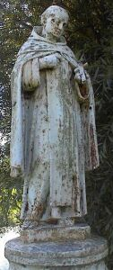
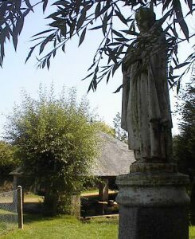
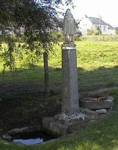
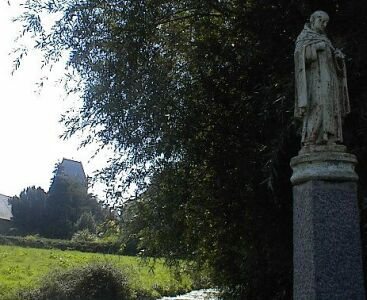

Saint Helier - Saint Hélyi - Saint Hélier

Other saints besides Saint Helier are remembered as having a connection with Jersey:
Mewan (in French, Méen - pronounced like French "main") came from Wales and was a companion of Saint Sampson. Although no memory appears to have been preserved in Jersey tradition of Mewan's visit to the Island, it is a tradition that is kept in mainland Normandy where the saint is venerated for his healing powers.
He subsequently travelled to Nanteuil where he joined Marcouf's monastery.
The healing spring of Saint Méen to be found at Ste-Mère-Eglise in mainland Normandy owes its legendary origin to the saint striking the ground and causing water to flow.
|  |  |
|  |  |
Ste-Mère-Eglise is probably best known for the parachutist caught on the roof of the church during the D-Day landings, however if one detours round the crowds and the souvenir shops, a small path (signed) can be found a short distance behind the church. At the bottom of the lane is a pump, a lavoir, and a statue of the saint perched above the healing spring itself.
The text posted on the information panel at the top of the lane reads as follows:
|
Né au Pays de Galles vers la fin du VIe siècle, Saint-Méen vint dans la région voir Saint-Marcouf. Assoiffé, il aurait frappé la terre de son bâton et une source aurait jailli à cet endroit. Elle ne fut jamais tarie. Au matin du 6 juin 1944, de nombreux civils trouvent refuge en ce lieu au creux du fossé. Saint-Méen est le second patron de Ste-Mère-Eglise (la Vierge étant toujours vénérée à Ste-Mère-Eglise). A côté de la statue de Saint-Méen se trouve une fontaine dont l'eau est réputé guérir les maladies de la peau.
Born in Wales in the VIth Century, Saint-Méen settles in the vicinity of St-Marcouf. to satisfy his thirst, he tapped his walking stick on the ground: a stream of water sprouted up. It is still flowing to this day. On D-Day, 6 June 1944, and a few days thereafter, people gathered here in a hollow trench. The Blessed Virgin is the patron saint of this town; but Saint-Méen is considered as its second patron saint. Next to his statue is a fountain of water which is reputed to heal skin diseases.
|
Viyiz étout:
Icon of St. Brelade in the Parish Church, St. Brelade, Jersey
Better known for the connection with Jersey. Legend relates that before arriving in Guernsey he visited Jersey where he received a hostile reaction from the inhabitants. On being better received in Guernsey, Samson was so grateful that he rid Guernsey of snakes. Hence the reason why Jersey has snakes but Guernsey does not.
Archbishop of Rouen. Exiled to Jersey as a result of court intrigues in 577. Also known as Saint Prix.
Better known under the name of Mannelier in Jersey. Founded the Priory of St. Mannelier.
Matthieu De Gruchy was born in Jersey in 1761. He became a sailor, was captured by the French and converted to Catholicism in 1780. Ordained a priest in 1788, he carried out an underground ministry in the Vendée during the upheavals of the French Revolution.
He was betrayed to the authorities, tried and condemned to death. He was shot by firing squad on 28th November 1797 in Place Viarme in Nantes.
The church of St-Mars-la-Réorthe contains a stained glass window depicting his martyrdom, as well as a confessional and pulpit constructed by the Saint himself who had taken up cabinetmaking as a trade.
Another stained glass window in Beauvoir-sur-mer shows the saint being led to his martyrdom.
R'tou à la page d'siez-mé | Back to home page
E-mail: geraint@societe-jersiaise.org